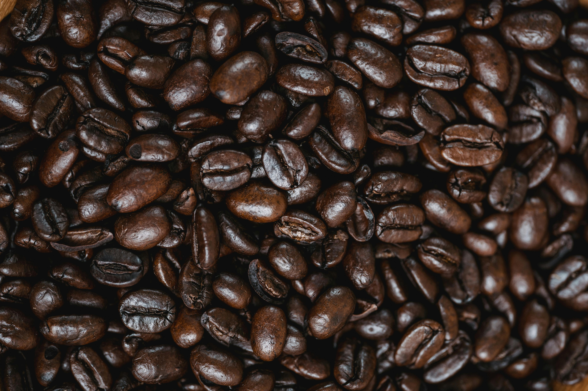

MORE ABOUT US
Every bean we use is carefully handpicked from the finest farms across Ethiopia, Colombia, and Brazil. We travel to the source, building relationships with local farmers who share our passion for quality and sustainability.
Only the ripest cherries make the cut. Each batch goes through a meticulous selection process to ensure consistency in flavour, aroma, and roast. No shortcuts, no compromises, just the best beans nature has to offer.
From the moment they are harvested to the second they hit your cup, our beans are handled with care. Freshly roasted in small batches, they preserve their natural oils and rich complexity, giving you a truly unforgettable coffee experience.
